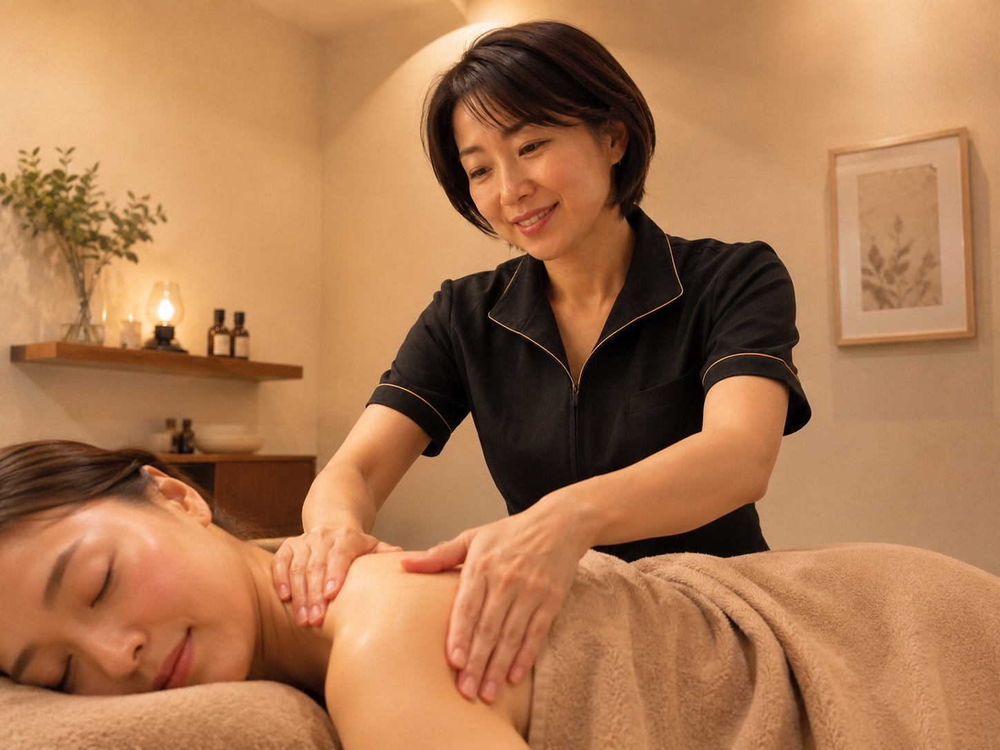
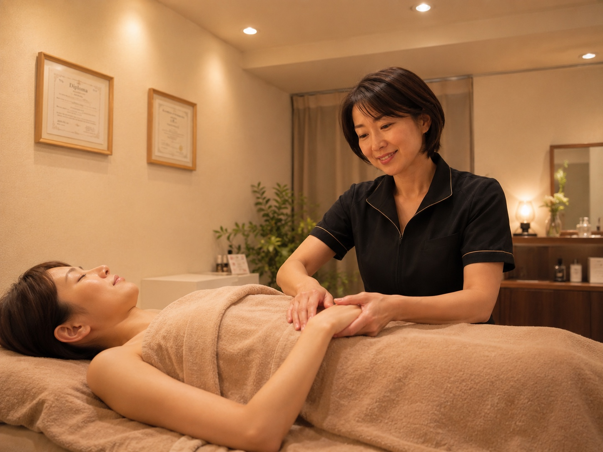
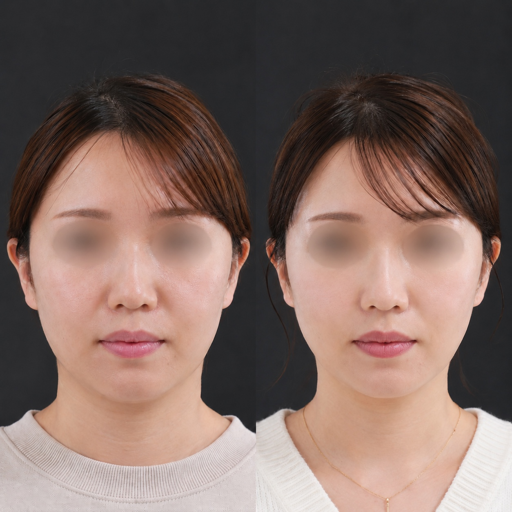
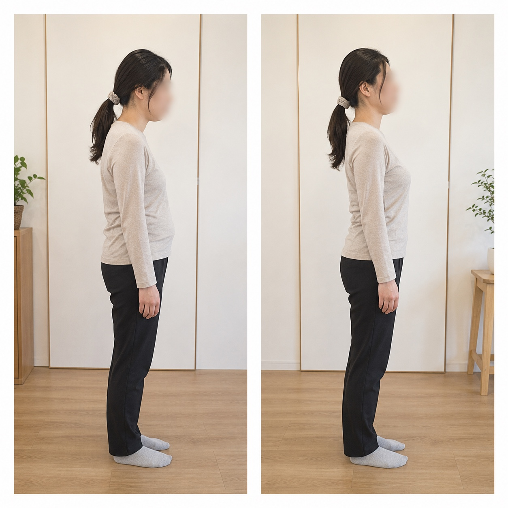
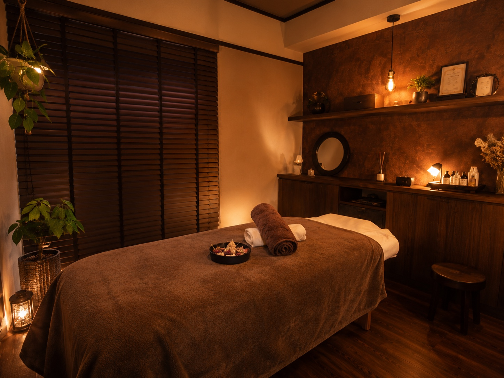
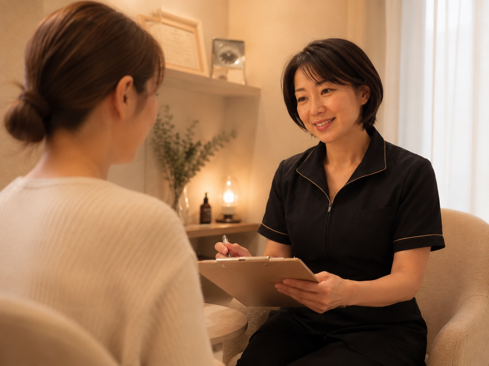
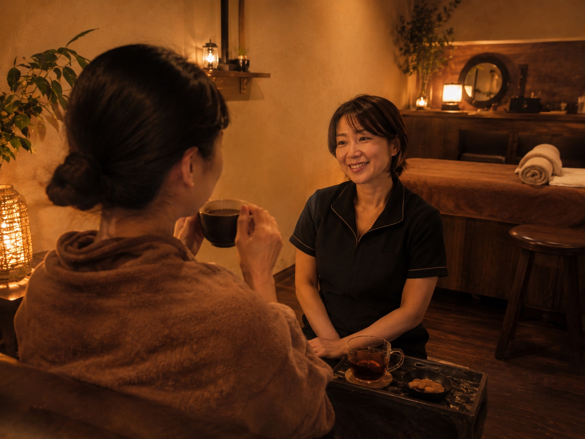

皮膚の動きを確認
触れたときの動きや左右差を見ながら、引っ張りの起点を探ります。
CHOFU · PRIVATE SALON FOR WOMEN
顔と身体を、全身から整える。
小顔矯正・痩身・肩こり改善・姿勢改善。
皮膚のねじれから整える独自技術で、
顔も身体も本来のバランスへ。
無理な勧誘は行いません。まずは今のお悩みをお聞かせください。

YOUR CONCERNS
以前より顔が大きく、四角く見える
頬やフェイスラインが下がってきた
体重だけでなく、身体の厚みが気になる
肩こりや首の重さが、休んでも抜けない
姿勢が崩れ、実年齢より疲れて見える
眠りが浅く、気持ちまで落ち着かない
WHY IT HAPPENS
私たちの皮膚は、服のように全身を一枚でつないでいます。 日々の姿勢や身体の使い方に偏りがあると、皮膚にも引っ張りやねじれが生まれます。
だからBlooméでは、つらい場所だけを揉むのではなく、皮膚の動きから全身のつながりを確認します。
BLOOMÉ ORIGINAL METHOD
強い刺激で形を変えようとするのではなく、皮膚をやさしく動かしながら、 どこからバランスが崩れているのかを確認。顔だけ、肩だけではなく、足元から頭部まで全身を見て施術します。

触れたときの動きや左右差を見ながら、引っ張りの起点を探ります。
顔のお悩みも身体から確認。部分だけに負担を集中させません。
睡眠や体調、生活習慣まで伺い、毎回の施術内容を組み立てます。
FIRST VISIT FLOW
お悩みを聞かずに、すぐ施術を始めることはありません。
予約ページから、ご希望の日時をお知らせください。
顔や身体のお悩み、生活習慣、目指したい状態を丁寧に伺います。
姿勢や左右差、皮膚の動きを確認し、施術方針をご説明します。
刺激の感じ方を確かめながら、顔と身体を全身から整えます。
施術後の状態を一緒に確認し、ご自宅での過ごし方をお伝えします。
BEFORE / AFTER
顔だけを小さく見せるのではなく、首・肩・姿勢まで整った、 その方本来のすっきりとした印象を目指します。


※施術による体感や変化には個人差があります。医療行為ではありません。
CLIENT REVIEWS
終わったあとの軽さや、つらい場所を的確に見つけてもらえる点が評価されています。
決まった流れではなく、その日の体調に合わせて内容を調整する丁寧さが支持されています。
担当が変わらず、周囲を気にせず悩みを話せる安心感につながっています。
※個別の口コミ本文は、掲載許可を確認した実際のお声のみ掲載します。

WHY CHOOSE US
ほかのお客様と重なりにくい、落ち着いたプライベート空間です。
カウンセリングから施術、アフターケアまで責任を持って対応します。
気になる部分だけでなく、全身のつながりから原因を探ります。
必要な施術をご説明し、ご本人が納得できるペースを大切にします。

OWNER THERAPIST
はじめまして。Bloomé Body & Wellness オーナーの小林です。 顔の大きさ、身体の厚み、長く続く肩こり。別々に見えるお悩みも、全身のバランスを見ていくとつながりが見つかることがあります。
一時的に強く押して終わるのではなく、皮膚の動きから今の身体を読み取り、 一人ひとりに合う方法を丁寧に考えること。それが私の施術の基本です。
変わりたいけれど、何をすればよいか分からない。そんなときこそ、気負わずご相談ください。
Bloomé Body & Wellness 小林

整うと、鏡を見る時間が
少し楽しみになる。
FREQUENTLY ASKED QUESTIONS
はい。最初にお悩みや体調を伺い、施術内容をご説明してから始めます。エステや整体が初めての方も安心してお越しください。
皮膚をやさしく動かすことを基本とし、強い刺激を目的にはしていません。感じ方を確認しながら調整しますので、遠慮なくお伝えください。
お顔の施術内容によっては、メイク直しが必要になる場合があります。詳しい準備についてはご予約時にご案内します。
目標や身体の状態、生活リズムによって異なります。初回の状態を確認したうえで目安をご案内しますが、無理な契約や勧誘は行いません。
初回カウンセリングで、顔と身体の両方を確認します。気になることをそのままお知らせいただければ、適した内容をご提案します。
FIRST EXPERIENCE
小顔、痩身、肩こり、姿勢。ひとつに絞れなくても大丈夫です。
初回体験では、小林が今のお悩みと全身の状態を丁寧に確認します。